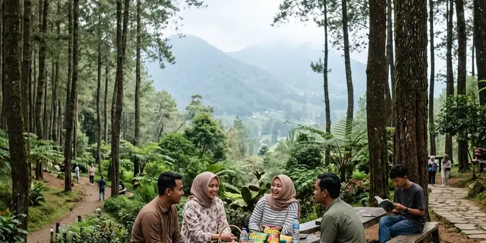

Taman Wisata Batu Kapal berlokasi di Klenggotan, Desa Srimulyo, Kecamatan Piyungan, Kabupaten Bantul, sekitar 17 kilometer atau 40 menit perjalanan dari pusat Kota Yogyakarta melalui Jalan Wonosari.
Ringkasan Inti
- Lokasi tepat Taman Wisata Batu Kapal berada di Klenggotan, Desa Srimulyo, Kecamatan Piyungan, Kabupaten Bantul.
- Jarak dari pusat Kota Yogyakarta sekitar 17 kilometer dengan waktu tempuh kurang lebih 40 menit.
- Rute utama melewati Jalan Wonosari ke arah timur, melalui objek wisata Kids Fun dan Pasar Wage.
- Penunjuk arah menuju gapura Klenggotan tersedia di sepanjang jalan menuju area parkir wisata.
- Akses jalan sudah cukup baik untuk kendaraan roda dua maupun roda empat.
Di Mana Tepatnya Lokasi Taman Wisata Batu Kapal?
Taman Wisata Batu Kapal berada di Klenggotan, Desa Srimulyo, Kecamatan Piyungan, Kabupaten Bantul, Daerah Istimewa Yogyakarta, tepat di tepi aliran Sungai Opak.
Lokasi ini berada di wilayah timur Kabupaten Bantul yang berbatasan dengan kawasan Piyungan, cukup dekat dengan beberapa objek wisata lain di sekitar aliran Sungai Opak. Posisi ini menjadikan Taman Wisata Batu Kapal relatif mudah dijangkau bagi wisatawan yang datang dari arah Kota Yogyakarta maupun dari wilayah Gunungkidul.
Bagaimana Rute Menuju Taman Wisata Batu Kapal dari Pusat Kota Yogyakarta?
Rute menuju Taman Wisata Batu Kapal dari pusat Kota Yogyakarta dapat ditempuh melalui Jalan Wonosari ke arah timur, melewati Kids Fun dan jembatan Kali Opak, hingga mencapai Pasar Wage.
Berikut arah perjalanan yang umum digunakan wisatawan:
- Dari pusat Kota Yogyakarta, arahkan kendaraan menuju Jalan Wonosari ke arah timur.
- Lewati objek wisata Kids Fun dan jembatan Kali Opak yang akan dilalui di sepanjang rute.
- Setelah melewati jembatan, Kawan akan menjumpai Pasar Wage sebagai penanda arah.
- Dari Pasar Wage, lanjutkan perjalanan ke timur hingga menemukan simpang tiga BUKP Kecamatan Piyungan.
- Beloklah ke arah utara atau kiri, masuk melalui gapura bertuliskan Klenggotan.
- Ikuti terus papan petunjuk arah hingga mencapai area parkir Taman Wisata Batu Kapal.

Akses jalan desa Klenggotan yang aman dan dapat dilalui kendaraan pribadi roda dua dan roda empat.
Berapa Lama Waktu Tempuh Menuju Taman Wisata Batu Kapal?
Waktu tempuh menuju Taman Wisata Batu Kapal dari pusat Kota Yogyakarta umumnya sekitar 40 menit menggunakan kendaraan pribadi, tergantung kondisi lalu lintas di sepanjang Jalan Wonosari.
Waktu tempuh dapat bervariasi tergantung jam keberangkatan, terutama jika perjalanan dilakukan pada jam sibuk atau musim liburan ketika arus lalu lintas di jalur Wonosari cenderung lebih padat. Untuk menghindari kepadatan, wisatawan dapat mempertimbangkan berangkat pada pagi hari sebelum jam kunjungan wisata ramai.
Moda Transportasi Apa yang Bisa Digunakan Menuju Lokasi?
Moda transportasi yang umum digunakan menuju Taman Wisata Batu Kapal adalah kendaraan pribadi seperti motor atau mobil, mengingat akses transportasi umum ke kawasan ini masih terbatas.
Karena lokasi berada di kawasan pedesaan yang belum sepenuhnya terjangkau transportasi umum reguler, wisatawan yang tidak membawa kendaraan pribadi umumnya memilih menggunakan jasa sewa kendaraan atau ojek daring dari pusat kota. Area parkir yang tersedia di lokasi dapat menampung kendaraan roda dua maupun roda empat dengan cukup baik.
Apa yang Perlu Diperhatikan Selama Perjalanan Menuju Lokasi?
Hal yang perlu diperhatikan selama perjalanan antara lain kondisi jalan di area pedesaan yang mungkin lebih sempit dari jalan utama, serta memastikan bahan bakar kendaraan cukup sebelum memasuki kawasan Klenggotan.
Sebagian jalan menuju gapura Klenggotan berupa jalan desa yang lebih sempit dibandingkan Jalan Wonosari, sehingga disarankan untuk berkendara dengan kecepatan yang lebih hati-hati, terutama saat berpapasan dengan kendaraan dari arah berlawanan. Mengikuti papan petunjuk arah yang tersedia di sepanjang rute juga dapat membantu menghindari kesalahan jalan menuju lokasi wisata.
FAQ Lokasi dan Rute Taman Wisata Batu Kapal
Lokasi ini umumnya dapat ditemukan melalui aplikasi peta digital dengan mencari nama Taman Wisata Batu Kapal atau Batu Kapal Park Piyungan.
Sebagian besar rute utama melalui Jalan Wonosari sudah beraspal baik, sementara jalan menuju gapura Klenggotan berupa jalan desa yang tetap dapat dilalui kendaraan roda dua maupun roda empat.
Transportasi umum reguler menuju lokasi ini masih terbatas, sehingga kendaraan pribadi atau layanan sewa kendaraan menjadi pilihan yang lebih umum digunakan wisatawan.
Lokasi Taman Wisata Batu Kapal di Klenggotan, Srimulyo, Piyungan, Bantul dapat dijangkau sekitar 40 menit dari pusat Kota Yogyakarta melalui Jalan Wonosari. Mengikuti papan petunjuk arah dan mempersiapkan kendaraan dengan baik dapat membantu perjalanan menuju lokasi berlangsung lebih lancar.